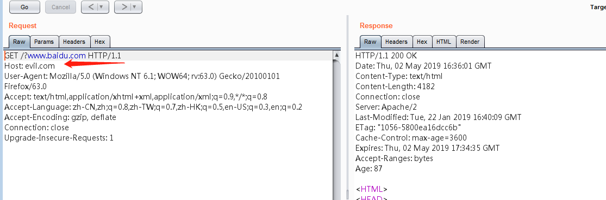

URL跳转bypass
有时候程序上可能对跳转的地址做了限制，可以利用以下的方式绕过对url跳转的限制。
问号跳转
问号跳转利用http协议的特性来绕过一般的防护，跳转地址为http://127.0.0.1/login.php?url=http://baidu.com,使用？问号特性，http://127.0.0.1/login.php?url=http://evil.com?www.baidu.com


井号跳转
跟问号一样，用http协议特性进行跳转
@跳转
火狐浏览器用@跳转会有弹框提示，其他没有。http://127.0.0.1/login.php?url=http://www.baidu.comm@evil.com,@后面是你想要跳转的地址。
xip.io绕过
xip.io多数用在SSRF读取内网地址，http://127.0.0.1/login.php?url=http://www.qq.com.220.181.57.217.xip.io 当你访问qq这个域名时，其实这个链接已经被解析到后面这个ip地址上了，那么实际访问的就是后面这个IP地址。那个IP地址就是百度的网址
反斜杠跳转
可以试试http://127.0.0.1/login.php?url=http://www.evil.com\www.baidu.com和http://127.0.0.1/login.php?url=http://www.evil.com\\www.baidu.com来绕过，因为有可能程序只判断\\后面的域名
多次跳转
绕过厂商允许某些信任的第三方的域名跳转，可以利用他来进行跳转，比如qq允许baidu.com进行跳转可以利用http://127.0.0.1/login.php?url=http://www.qq.com?url=http:abc.baidu.com?jump=http://evil.com，他就会去了abc.baidu.com再跳转。
协议缺失
去掉http://协议有可能会绕过http://127.0.0.1/login.php?url=//www.evel.com